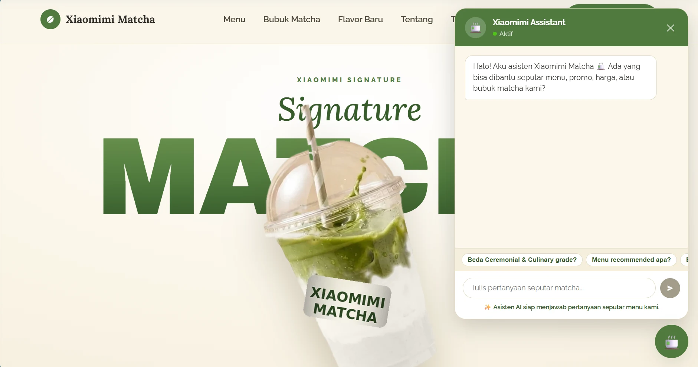

01
FULL-STACK AI · HYBRID RAG
Xiaomimi Matcha
A matcha storefront with a Gemini assistant that answers customer questions using retrieved knowledge from product PDFs.
View Project// Hello, I'm
_
Informatics Engineering student at Universitas Budi Luhur (semester 4 → 5), concentration in AI for Data Text, with a strong interest in data and artificial intelligence. I build data analysis & machine learning pipelines with Python - from data collection and modeling to evaluation.
// Based in Jakarta - open to internships
I'm Muhammad Ariefsyah, an Informatics Engineering student at Universitas Budi Luhur who shifted from a vocational background into the world of data and AI - and I enjoy every step of the learning journey.
I love turning raw data into actionable insight: designing machine learning pipelines, evaluating models honestly, and communicating results with clear visuals - from buzzer-detection research to retail analysis.
Latest Achievement
1 AwardExplore my technical toolkit and see exactly how they were applied in my academic, research, and community projects. Hover over any skill chip to see its neural mapping and load detailed case study insights.
> SYSTEMS_READY: TRUE
> Mapped tech stack nodes: 19
> Linked project nodes: 7
> Hover over any technical skill on the left to trace its neural mapping to portfolio projects and load specific usage telemetry.
Written ideas and academic exploration in data & technology. Click a card to open the case study.
Applying the Cerdas Berbudi Luhur value through real contributions to the community. Click a card to open the case study.
Indonesian-language text processing, covering sentiment analysis, semantic embeddings, and information extraction.
Predictive modeling, classification, and clustering, built with honest evaluation and interpretation.
Statistical exploration, data wrangling, and clear visualization that turns raw data into insight.
End-to-end problem framing, turning messy data into models, experiments, and decisions that drive real outcomes.
Have a data project, an idea, or just want to say hi? I'd love to hear from you.
muhammadariefsyah00@gmail.com